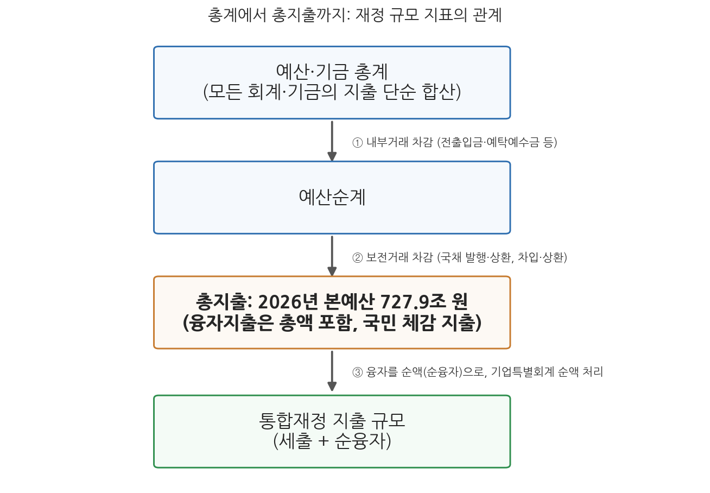
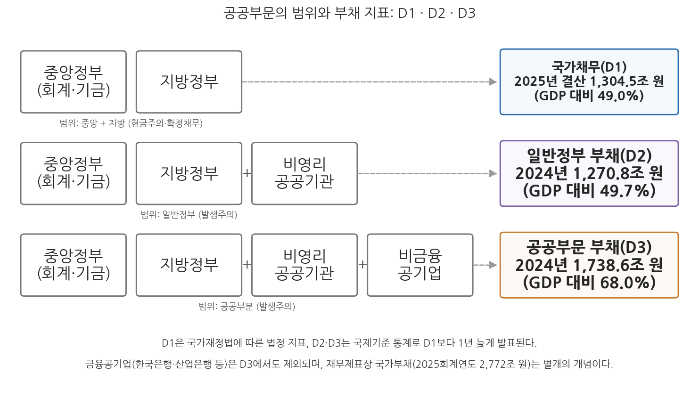

4주차 2차시. 총지출과 나라살림의 크기
최종 수정: 2026-08-13 · 이 교재는 학기 중에도 계속 업데이트됩니다
정부는 건전재정을 유지하고 국가채권을 효율적으로 관리하며 국가채무를 적정수준으로 유지하도록 노력하여야 한다. (국가재정법 제86조(재정건전화를 위한 노력))
이 장에서 배우는 것
2025년 12월 2일, 국회 본회의는 2026년도 예산을 총지출 727.9조 원으로 의결했다. 헌법이 정한 법정기한(12월 2일) 안에 여야 합의로 처리된 것은 2021년 이후 5년 만이었고, 총지출 증가율은 전년 본예산 대비 8.1%로 확장재정 기조를 반영한 역대 최대 규모였다. 다음 날 신문 1면을 채운 "727.9조 원"이라는 숫자 앞에서 앞 차시의 질문을 다시 던져 보자. 이 숫자는 무엇을 세어서 나온 것인가. 모든 회계와 기금을 그냥 더한 총계인가, 내부거래를 걷어낸 순계인가, 아니면 통합재정 규모인가. 답은 그 어느 것도 아닌 네 번째 지표, 총지출이다. 그리고 이 숫자는 고정되어 있지도 않다. 2026년 4월 국회는 고유가 대응을 위한 26.2조 원의 추가경정예산(추경)을 확정해 나라살림의 크기를 한 번 더 키웠다.
이 장은 나라살림의 크기를 재는 자들을 다룬다. 크기를 재는 일은 세 방향으로 확장된다. 첫째, 한 해 정부가 쓰는 돈의 크기(총지출)다. 둘째, 그 크기를 다른 나라와 비교하는 일(일반정부 총지출)인데, 비교하려면 먼저 "정부"의 범위부터 국제적으로 통일해야 한다(공공부문의 범위). 셋째, 한 해 살림이 아니라 쌓인 빚의 크기(국가채무와 국가부채)다. 앞 차시에서 익힌 합산의 논리, 곧 내부거래와 보전거래를 걷어내는 순계의 논리가 세 방향 모두에서 다시 등장한다. 구체적으로 다음을 배운다.
- 총지출의 산출 방식과 통합재정 규모와의 차이, 2026년 예산의 실제 수치
- 재정규모의 국가 간 비교가 일반정부 총지출 기준으로 이루어지는 이유
- IMF 재정통계 기준(GFS)의 제도단위·지배성·시장성 기준과 공공부문의 범위
- 국가채무(D1), 일반정부 부채(D2), 공공부문 부채(D3)의 구분
- 국가채무와 재무제표상 국가부채의 차이, 그리고 최신 수치로 읽는 한국의 재정건전성
이 장은 하나의 질문을 따라 전개된다. "나라살림의 크기는 무엇으로 재며, 그 잣대는 어디까지를 '정부'로 보는가?"
2.1 정부 지출의 대표 지표인 총지출의 개념과 2026년 예산의 규모를 본다 → 2.2 재정규모를 나라 간에 비교하는 방법(일반정부 총지출)을 본다 → 2.3 비교의 전제인 공공부문의 범위를 IMF 기준으로 확정한다 → 2.4 흐름(지출)에서 저량(빚)으로 눈을 돌려 국가채무(D1) · 일반정부 부채(D2) · 공공부문 부채(D3)와 국가부채를 구분한다.
2.1 총지출의 개념과 규모
국민이 체감하는 지출의 크기
총지출은 오늘날 한국 정부의 재정 규모를 대표하는 지표다. 예산안 발표도, 국회 심의도, 언론 보도도 "총지출 727.9조 원"처럼 총지출을 기준으로 이루어진다. 산출 방식은 앞 차시에서 익힌 논리의 연장이다. 예산(일반회계·특별회계)과 기금의 지출 총계에서 회계·기금 간 내부거래를 빼고, 국채 상환 같은 보전지출을 마저 빼면 총지출이 된다. 내부거래를 빼는 이유는 이중계산 때문이고, 보전거래를 빼는 이유는 국채의 발행과 상환이 실질적인 수입·지출의 확대가 아니라 재정수지를 보전해 주는 거래이기 때문이다. 요컨대 총지출은 정부 바깥의 국민경제를 향해 실제로 나가는 돈, 곧 국민의 입장에서 체감하는 정부 지출의 규모를 재려는 지표다. 수입 쪽에서 같은 방식으로 계산한 것이 총수입이며, 앞 차시에서 본 통합재정수지는 실무적으로 이 총수입에서 총지출을 뺀 값으로 발표된다.
총지출(total expenditure)은 예산과 기금의 지출 총계에서 내부거래와 보전거래를 제외하여 산출한 정부 지출 규모다. 경상지출과 자본지출에 융자지출까지 총액 기준으로 포함하며, 정부가 국민경제에 미치는 재정활동의 크기를 보여 준다. 정부가 2005년부터 재정 규모의 대표 지표로 사용해 왔으며, 법률에 정의된 용어가 아니라 재정통계·예산 발표의 실무 지표다.
총지출은 통합재정의 지출 규모와 형제 지표지만 둘은 같지 않다. 차이는 두 군데서 생긴다. 첫째, 융자거래의 처리다. 통합재정은 융자지출에서 융자회수를 뺀 순융자만 지출로 계상하지만, 총지출은 융자지출 총액을 그대로 포함한다. 정부가 중소기업에 60조 원을 빌려주고 20조 원을 회수했다면 통합재정에는 40조 원이, 총지출에는 60조 원이 잡힌다. 빌려주는 돈도 그 해에 국민경제로 나가는 돈이라는 체감의 논리가 총지출 쪽에 반영된 것이다. 둘째, 기업특별회계의 처리다. 우편사업 같은 정부기업의 활동에 대해 통합재정은 영업수입과 영업지출을 상계한 순액을 부호에 따라 수입 또는 지출로 기록하지만, 총지출은 지출 총액 기준으로 반영한다. 그림 4-3이 앞 차시의 개념들과 총지출의 관계를 한눈에 보여 준다.

그림 4-3을 읽는 법은 이렇다. 왼쪽에서 오른쪽으로 갈수록 합산에서 걷어내는 것이 늘어난다. 모든 회계·기금을 단순 합산한 총계에서 내부거래를 빼면 순계가 되고, 보전거래까지 빼면 총지출이 된다. 오른쪽 끝의 통합재정 지출 규모는 총지출에서 융자를 순액으로 바꾸고 기업특별회계를 순액 처리한 값이다. 이 그림에서 알 수 있는 것은, 언론에 등장하는 여러 재정 규모 숫자들이 서로 모순되는 것이 아니라 걷어내는 단계가 다른 한 가족이라는 점이다. 같은 해의 나라살림도 어느 지표로 재는가에 따라 수십조 원씩 다르게 발표될 수 있다.
2026년의 나라살림: 727.9조 원과 그 후
실제 수치로 확인하자. 2026년 본예산은 총지출 727.9조 원, 총수입 675.2조 원이다. 총지출은 전년 본예산(673.3조 원) 대비 8.1% 늘어난 역대 최대 증가폭으로, 이재명 정부의 확장재정 기조를 반영한다. 총수입과 총지출의 차이 52.7조 원의 적자는 앞 차시에서 본 통합재정수지의 논리로 이어지며, 확정 예산 기준 관리재정수지 적자는 GDP 대비 3.9%(정부안 4.0%에서 개선)로 전망되었다. 한 해 살림은 본예산으로 끝나지 않는다. 2026년 4월 11일 국회는 중동전쟁발 고유가 대응과 민생 안정을 위한 26.2조 원 규모의 제1회 추경을 확정했다(정부안 25.2조 원). 전년인 2025년에도 본예산 673.3조 원에 더해 5월에 13.8조 원, 7월에 31.8조 원의 추경이 두 차례 편성되었다. 추경의 요건과 정치학은 6주차에서 본격적으로 다루되, 여기서는 재정 수치를 읽을 때 본예산 기준인지 추경 포함 기준인지 결산 기준인지를 반드시 확인해야 한다는 교훈만 챙겨 두자.
2026년도 예산안은 2025년 12월 2일 국회 본회의에서 총지출 727.9조 원으로 의결되었다. 헌법상 법정기한 내 여야 합의 처리는 2021년 이후 5년 만이다. 국회 심의 과정에서 정책펀드·AI 지원 등 4.3조 원이 감액되고 미래 성장동력·민생·재해예방·지역경제에 4.2조 원이 증액되어, 정부안(728.0조 원)에서 0.1조 원 순감으로 확정되었다. 내용 면에서는 "AI 3강 대전환"을 내건 AI 예산이 국회 확정 기준 9.9조 원(738개 사업, 국회예산정책처 집계)으로 전년의 약 3배로 늘었고, 정부 R&D 예산은 35.5조 원으로 전년 대비 19.9% 증가했다. 직전 해인 2025년 본예산이 여야 합의 없이 야당 주도의 감액 수정안(4.1조 원 감액)으로 처리된 헌정 사상 첫 사례였다는 점과 대비된다. (출처: 대한민국 정책브리핑, 2025년 12월 2일; 국회예산정책처, 2026년 1월)
이 사례가 보여 주는 것은 총지출이라는 숫자가 정치 과정의 산물이라는 점이다. 727.9조 원은 기획예산처가 편성한 정부안이 국회의 감액·증액 심의를 거쳐 확정된 값이며, 그 안의 구성(AI, R&D 등)은 정부의 정책 우선순위를 그대로 반영한다. 한편 정부의 중기 계획인 2025-2029년 국가재정운용계획은 총지출이 연평균 5.5% 늘어 2029년 834.7조 원에 이를 것으로 전망했다. 나라살림의 크기는 한 해의 스냅숏이 아니라 커지는 추세 속에서 읽어야 한다.
국가재정법 어디에도 "총지출"의 정의 조항은 없다. 총지출은 2005년부터 재정당국이 사용해 온 재정통계의 실무 지표로, 예산총계주의에 따라 총계로 작성된 예산서를 국민이 체감하는 규모로 재가공한 값이다. 따라서 국회가 의결하는 법적 대상은 세입세출예산과 기금운용계획이지 "총지출 727.9조 원"이라는 숫자 자체가 아니며, 총지출 수치는 발표 시점의 기준(본예산 · 추경 · 결산)에 따라 달라진다. 숫자를 인용할 때는 "2026년 본예산 기준 총지출 727.9조 원"처럼 연도와 기준을 함께 적는 습관을 들이자.
2.2 재정규모의 국가 간 비교
총지출로는 나라 간 비교를 할 수 없다
한국 정부의 총지출 727.9조 원은 큰가 작은가. 이 질문에 답하려면 비교의 대상과 잣대가 필요한데, 각국의 중앙정부 예산 수치를 그대로 견주는 것은 잘못된 비교다. 이유는 두 가지다. 첫째, 나라마다 회계·기금의 칸막이 구조와 재정통계 작성 방식이 달라서, 어떤 나라의 "예산"에는 사회보험이 들어 있고 어떤 나라에는 빠져 있다. 둘째, 중앙정부와 지방정부의 일 나누기가 나라마다 달라서, 연방제 국가처럼 지방이 큰 몫을 지출하는 나라의 중앙예산은 실제 정부 활동보다 훨씬 작아 보인다. 그래서 국가 간 재정규모 비교는 중앙정부와 지방정부를 합한 일반정부(general government) 총지출을 GDP 대비 비율로 환산해 비교하는 것이 국제 표준이며, OECD(경제협력개발기구)의 재정 비교 통계가 대표적으로 이 기준을 쓴다.
비교의 요체는 제도의 차이에 휘둘리지 않는 잣대다. 같은 복지 지출이라도 A국은 중앙정부 일반회계로, B국은 별도의 사회보장기금으로, C국은 지방정부로 집행할 수 있다. 기관 단위나 회계 단위로 비교하면 이런 제도 설계의 차이가 규모의 차이로 둔갑한다. 일반정부 기준은 "어느 주머니에서 나갔는가"를 묻지 않고 "정부 부문 전체에서 국민경제로 나간 돈이 얼마인가"를 묻기 때문에 제도 중립적이다. 공무원 수의 국가 간 비교가 일반정부 고용 기준으로 이루어지는 것도 같은 이유다. 국공립과 민간 위탁의 경계가 나라마다 다르므로, 정부 부문 전체의 고용을 세어야 비교가 성립한다.
한국의 위치: 작은 재정, 빠른 확대
일반정부 총지출 기준으로 본 한국의 재정규모는 OECD 회원국 가운데 낮은 편에 속해 왔다. 정부 지출이 GDP의 절반 안팎에 이르는 북유럽·서유럽의 복지국가들과 비교하면 격차가 크고, OECD 평균과 비교해도 낮다. 격차의 큰 몫은 복지지출이다. 한국의 공공사회복지지출은 2019년 기준 GDP 대비 12.2%로 OECD 평균(20.0%)에 크게 못 미쳐 38개 회원국 중 35위였다. 다만 이 격차를 "작은 정부"의 증거로 곧장 읽는 것은 성급하다. 한국의 복지제도는 다른 회원국보다 늦게 도입되어 아직 성숙 과정에 있고, 급속한 고령화와 함께 연금·의료 지출이 빠르게 늘고 있어 지출 비율의 증가 속도는 OECD에서 가장 빠른 축에 속한다는 분석이 반복적으로 제시되어 왔다. 오늘의 낮은 비율은 정지된 사진일 뿐, 필름은 빠르게 돌아가고 있는 것이다.
해석에는 추가의 주의가 필요하다. 첫째, 일반정부 지출 비율은 정부 개입의 전부를 재지 못한다. 세금을 깎아 주는 방식의 지원(조세지출)이나 규제를 통한 개입은 지출 통계에 잡히지 않는다. 조세지출은 6주차에서 자세히 다루겠지만, 2026년 국세감면액이 80.5조 원에 이르는 또 하나의 숨은 예산이다. 둘째, 비율의 분모(GDP)와 분자(지출)의 기준연도와 통계 기준이 같아야 한다. 국제기구 통계는 개정과 소급 수정이 잦으므로, 특정 연도의 비율을 인용할 때는 출처와 기준을 명시해야 한다. 셋째, 큰 정부와 작은 정부의 규범적 논쟁은 지출 비율이라는 하나의 숫자로 판정되지 않는다. 1주차에서 본 것처럼 재정의 크기는 그 사회가 정부에 맡기기로 한 일의 크기를 반영하는 정치적 선택의 결과다.
2.3 공공부문의 범위
재정통계의 두 전환: 회계 단위에서 제도 단위로, 현금에서 발생으로
나라 간 비교의 잣대인 "일반정부"는 어떻게 확정되는가. 기준은 IMF의 정부재정통계 지침이다. 앞 차시에서 본 것처럼 한국의 통합재정은 현금주의에 기초한 GFSM 1986 체계로 출발했는데, IMF는 2001년 지침 개정(GFSM 2001)과 2014년 후속판(GFSM 2014)에서 재정통계의 틀을 두 방향으로 바꾸었다. 첫째, 재정의 범위를 회계(재원) 단위에서 제도 단위(institutional unit)로 전환했다. 일반회계·특별회계·기금이라는 장부의 칸막이가 아니라, 의사결정의 주체인 기관을 단위로 정부 부문을 확정하고 일반정부(중앙+지방) 외에 비영리공공기관, 나아가 공기업까지 포괄하는 방향이다. 둘째, 현금주의 회계에서 발생주의 회계로 전환했다. 현금주의는 돈이 오간 시점만 기록하므로 대규모 자산의 감가상각이나 연금처럼 미래에 지불해야 하는 의무에 관한 정보를 담지 못하는 문제가 있는데, 발생주의는 거래가 발생한 시점에 자산·부채의 변동을 기록함으로써 재정의 책임성과 운영성과 파악을 높인다.
제도 단위 기준에서 어떤 기관이 정부이고 어떤 기관이 공기업인지는 세 가지 물음으로 판정한다. 첫째, 제도단위인가. 스스로 의사결정을 하고 책임을 질 수 있으며 재무의 흐름(유량)과 잔액(저량)을 통합적으로 파악할 수 있는 기관이어야 하나의 단위로 센다. 둘째, 지배성이 있는가. 정부가 재정지원(예컨대 수입의 50% 이상), 인사권, 의결권 등을 통해 실질적 영향력을 행사하는 기관은 공공부문에 넣는다. 셋째, 시장성이 있는가. 생산원가의 50% 이상을 판매수입으로 회수하는 기관은 시장에서 활동하는 공기업으로, 그렇지 못한 기관은 사실상 정부의 연장인 비영리공공기관으로 분류해 일반정부에 포함한다. 요컨대 일반정부는 "정부가 지배하되 시장성이 없는 기관까지"이고, 공공부문은 거기에 "정부가 지배하는 시장적 기관(공기업)"을 더한 범위다.
일반정부(general government)는 중앙정부와 지방정부의 정부 단위에 정부가 지배하는 비시장 기관인 비영리공공기관을 더한 범위다. 공공부문(public sector)은 일반정부에 중앙·지방의 공기업(비금융공기업과 금융공기업)까지 더한 범위다. 판정 기준은 제도단위성, 정부의 지배성, 시장성(원가의 50% 이상 판매수입 회수)이며, 시장성 기준을 충족해도 특수한 기준이 적용되는 기관은 일반정부로 분류될 수 있다. 비영리공공기관과 공기업의 경계는 실제로는 판정이 모호한 회색지대가 넓다.
한국의 공공기관 분류: 국제 기준의 국내 번역
이 국제 기준의 논리는 한국의 공공기관 관리 제도에도 번역되어 있다. 공공기관의 운영에 관한 법률에 따라 정부는 매년 공공기관을 지정하는데, 2026년에는 1월 29일 구윤철 부총리 겸 재정경제부장관 주재의 공공기관운영위원회가 342개 기관(전년 331개)을 지정했다. 2008-2026년에는 기획재정부가 담당하던 공공기관 관리 사무가 2026년 개편으로 재정경제부 소관이 된 것이다. 분류의 뼈대가 시장성, 곧 자체수입의 비중이라는 점을 표 4-2에서 확인하자.
표 4-2. 한국의 공공기관 유형 구분 (공공기관의 운영에 관한 법률 체계)
| 유형 | 세부 유형 | 공통 요건 | 지정 기준(원칙) |
|---|---|---|---|
| 공기업 | 시장형 공기업 | 직원 정원 300인 이상, 총수입액 200억 원 이상, 자산 30억 원 이상이면서 자체수입 비율 50% 이상 | 자체수입 비율 85% 이상이고 자산 2조 원 이상 |
| 준시장형 공기업 | 자체수입 비율 50-85% | ||
| 준정부기관 | 기금관리형 준정부기관 | 위 규모 요건을 충족하되 자체수입 비율 50% 미만 | 중앙정부의 기금을 관리하는 기관 |
| 위탁집행형 준정부기관 | 기금관리형이 아닌 준정부기관 | ||
| 기타공공기관 | 공기업·준정부기관을 제외한 공공기관 |
표 4-2를 읽는 법은 이렇다. 가르는 축은 자체수입 비율, 곧 시장성이다. 수입의 절반 이상을 스스로 버는 기관은 공기업으로, 그렇지 못한 기관은 준정부기관으로 분류되며, 이는 IMF 기준의 시장성 판정(원가의 50%)과 같은 발상이다. 이 그림에서 알 수 있는 것은 "공공기관"이라는 한 단어 안에 시장에서 전기를 파는 기업형 조직부터 정부 업무를 위탁 수행하는 사실상의 행정조직까지 넓은 스펙트럼이 들어 있다는 점이다. 국제 재정통계에서 준정부기관과 기타공공기관의 다수는 비영리공공기관으로서 일반정부에, 공기업은 공공부문에 각각 편입된다.
공공부문의 범위 구분은 다음 절의 부채 지표와 직결된다. 그림 4-4가 그 연결을 미리 보여 준다.

그림 4-4를 읽는 법은 이렇다. 위에서 아래로 내려갈수록 "정부"의 범위가 넓어지고, 각 범위에 대응하는 부채 지표가 오른쪽에 붙어 있다. 중앙정부와 지방정부의 회계·기금만 세면 국가채무(D1), 비영리공공기관까지 넓히면 일반정부 부채(D2), 비금융공기업까지 넓히면 공공부문 부채(D3)다. 이 그림에서 알 수 있는 것은 두 가지다. 첫째, 부채 지표의 차이는 계산법의 차이 이전에 "어디까지가 정부인가"라는 범위의 차이다. 둘째, 한국은행과 산업은행 같은 금융공기업은 D3에서도 제외된다. 금융기관의 부채(예금 등)는 성격이 달라 재정 부채와 합산하면 오히려 정보가 왜곡되기 때문이다.
2.4 국가채무와 국가부채
흐름에서 저량으로: 나라의 빚
지금까지 잰 것은 한 해의 흐름(flow)이었다. 그러나 재정건전성과 지속가능성을 판단하는 데는 해마다의 적자가 쌓여 만들어진 저량(stock), 곧 나라의 빚이 결정적이다. 앞 차시에서 본 관리재정수지 적자 104.2조 원(2025회계연도 결산)은 그 해로 끝나지 않고 국가채무라는 잔액으로 축적된다. 헌법은 이 빚의 문에 국회라는 빗장을 걸어 두었다.
"국채를 모집하거나 예산외에 국가의 부담이 될 계약을 체결하려 할 때에는 정부는 미리 국회의 의결을 얻어야 한다."
무슨 뜻인가. 빚을 내는 것은 미래 납세자의 부담을 지금 결정하는 일이므로, 지출 예산과 마찬가지로 국민 대표기관의 사전 동의를 받아야 한다는 것이다. 2주차에서 본 사전의결 원칙이 채무의 영역까지 확장된 조문이며, 매년 예산안과 함께 국채 발행 한도가 국회 의결을 받는 근거다. 그렇다면 그 "빚"은 정확히 무엇을 말하는가. 국가재정법이 국가채무의 범위를 정하고 있다.
"② 제1항의 규정에 따른 금전채무는 다음 각 호의 어느 하나에 해당하는 채무를 말한다.
1. 국가의 회계 또는 기금 ... 이 발행한 채권
2. 국가의 회계 또는 기금의 차입금
3. 국가의 회계 또는 기금의 국고채무부담행위 ...
③ 제2항의 규정에 불구하고 다음 각 호의 어느 하나에 해당하는 채무는 국가채무에 포함하지 아니한다.
1. 「국고금관리법」 제32조제1항의 규정에 따른 재정증권 또는 한국은행으로부터의 일시차입금 ...
3. 제2항제2호에 해당하는 차입금 중 국가의 다른 회계 또는 기금으로부터의 차입금"
무슨 뜻인가. 국가채무는 국가의 회계 또는 기금이 부담하는 금전채무로서 국채, 차입금, 국고채무부담행위가 그 몸통이다. 핵심은 두 가지 원칙이다. 첫째, 확정주의다. 채무의 존재와 지급 시기, 금액이 확정되어 지급 의무가 결정된 채무만 센다. 아직 확정되지 않은 미래의 의무(예컨대 공무원연금을 장차 지급할 의무)나 보증채무는 원칙적으로 제외하되, 정부의 대지급 이행이 확정된 보증채무는 포함한다. 연도 안에 갚는 재정증권이나 한국은행 일시차입금 같은 유동성 조절 수단도 제외한다. 둘째, 내부거래 제외다. 제3항 제3호가 보여 주듯 국가의 다른 회계·기금에서 빌린 돈은 국가채무에서 뺀다. 정부 안에서 오간 빚을 세면 이중계산이 되기 때문인데, 앞 차시의 순계 논리가 저량 통계에서도 그대로 작동하는 것이다. 국가채무 통계는 현금주의 기준으로 작성되며, 2026년 정부조직 개편 이후 국가채무에 관한 사무는 정부조직법상 기획예산처 소관이다.
D1, D2, D3: 세 개의 눈금
국가채무 지표는 2.3절에서 확정한 정부 범위에 따라 세 눈금으로 발표된다. 표 4-3이 세 지표와 최신 수치를 정리한 것이다.
표 4-3. 한국의 부채 지표 3종과 재무제표상 국가부채
| 지표 | 포괄범위 | 회계 기준 | 최신 수치 |
|---|---|---|---|
| 국가채무(D1) | 중앙정부 + 지방정부의 회계·기금 | 현금주의(확정채무만) | 2025년 결산 1,304.5조 원 (GDP 대비 49.0%) |
| 일반정부 부채(D2) | D1 + 비영리공공기관 | 발생주의 | 2024년 기준 1,270.8조 원 (GDP 대비 49.7%) |
| 공공부문 부채(D3) | D2 + 비금융공기업 | 발생주의 | 2024년 기준 1,738.6조 원 (GDP 대비 68.0%) |
| (참고) 재무제표상 국가부채 | 중앙정부 재무제표(확정부채 + 연금충당부채 등 비확정부채) | 발생주의 | 2025회계연도 2,772조 원 |
표 4-3을 읽는 법은 이렇다. D1은 국가재정법에 따른 법정 지표로 국가재정운용계획 등 국내 재정관리의 기준이고, D2는 국제비교(IMF·OECD)의 기준이며, D3는 공기업까지 포함해 공공부문 전체의 부채 위험을 보는 관리 지표다. 이 표에서 알 수 있는 것은 세 가지다. 첫째, 범위가 넓어질수록 부채는 커진다(D2가 D1보다 작아 보이는 것은 기준연도가 다르기 때문으로, D2·D3는 발생주의 전환과 지방·공공기관 결산 취합에 시간이 걸려 D1보다 1년 늦게 발표된다). 둘째, 같은 지표라도 기준(결산·전망)과 연도를 붙여 읽어야 한다. 셋째, 재무제표상 국가부채는 국가채무와 전혀 다른 개념이다. 이 마지막 구분이 자주 혼동을 낳으므로 따로 짚자.
국가채무와 국가부채의 차이는 확정성의 차이다. 국가채무(D1)는 지급 의무가 확정된 빚만 세는 좁은 개념이다. 반면 국가회계법에 따라 발생주의로 작성되는 국가 재무제표의 부채에는 확정부채에 더해 연금충당부채 같은 비확정부채가 포함된다. 연금충당부채는 공무원·군인연금을 장래에 지급하기 위해 현재 시점에서 필요하다고 추정한 금액으로, 지급 시기와 금액이 확정된 빚이 아니라 보험수리적 가정에 따라 달라지는 추계값이다. 2025회계연도 결산에서 국가 재무제표상 부채는 2,772조 원, 자산은 3,593조 원이었는데, 이 부채 총액을 "나라가 갚아야 할 빚 2,772조 원"으로 읽으면 잘못이다. 상당 부분은 미래 연금 지급 의무의 현재가치 추정치이며, 그 지급은 미래의 보험료 수입과 함께 이루어진다. 한편 학계와 언론에서는 D3에 연금충당부채까지 더한 가장 넓은 지표를 D4라 부르기도 한다.
2025회계연도 국가결산은 재무제표 확정 과정에서 한 차례 홍역을 치렀다. 감사원의 결산 검사에서 19조 원 규모의 회계 오류가 발견되어 수정된 뒤에야 국가자산 3,593조 원, 국가부채 2,772조 원으로 확정된 것이다. 발생주의 재무제표는 자산 평가와 충당부채 추계 등 판단이 개입하는 영역이 넓어 현금주의 장부보다 오류와 논쟁의 여지가 크며, 그래서 헌법기관인 감사원의 결산 검사가 품질을 통제하는 최종 관문이 된다. 결산과 회계검사의 절차는 10주차에서 자세히 다룬다. (출처: 감사원 결산검사 결과에 관한 언론 보도, 2026년 5월)
이 사례가 보여 주는 것은 발생주의 재정통계의 힘과 약점이 동전의 양면이라는 점이다. 미래의 의무까지 보여 주는 대신, 그 수치는 추정에 의존하고 오류 가능성도 커진다. 국가채무(D1)의 현금주의 확정치와 재무제표의 발생주의 추계치를 함께 읽어야 나라 빚의 전체 그림이 잡힌다.
쟁점: 빠르게 불어나는 빚과 사라진 빗장
한국의 국가채무에서 국제비교 수준보다 더 주목해야 할 것은 속도다. 수준으로 보면 한국의 일반정부 부채(D2) 비율은 2024년 기준 GDP 대비 49.7%로 OECD 평균(109.1%)의 절반에 못 미친다. 그러나 국가채무(D1)는 2025년 한 해에만 129.4조 원 늘어 결산 기준 1,304.5조 원, GDP 대비 49.0%(전년 46.0%)에 이르렀고, 2026년 확정예산 기준으로는 연말까지 1,415.2조 원, GDP 대비 51.6%에 이를 것으로 전망되었다. 2025-2029년 국가재정운용계획은 2029년 국가채무를 1,788.9조 원, GDP 대비 58.0%로 전망한다. 저출생·고령화로 세입 기반은 좁아지고 복지지출은 늘어나는 구조 변화 속의 증가라는 점, 그리고 관리재정수지 적자를 GDP 대비 3% 이내로 묶는 재정준칙의 법제화가 무산되어 채무 증가를 견제할 법적 빗장이 없는 상태라는 점이 논쟁의 핵심이다. 확장재정론은 성장 잠재력 확충과 위기 대응을 위한 투자가 오히려 장기 건전성에 기여한다고 보고, 건전재정론은 비기축통화국의 부채 누적이 대외신인도와 미래 세대 부담으로 돌아온다고 본다. 이 장 첫머리의 국가재정법 제86조가 "노력하여야 한다"는 선언에 그치는 상황에서, 재정준칙을 어떻게 설계할 것인가의 논쟁은 9주차에서 정면으로 다룬다.
국가채무 기사를 읽을 때는 네 가지를 확인하자. ① 어느 지표인가. 국가채무(D1) · 일반정부 부채(D2) · 공공부문 부채(D3) · 재무제표상 국가부채는 범위와 회계 기준이 모두 다르다. ② 어느 연도, 어느 기준인가. 결산 확정치인지 예산 기준 전망치인지 구분해야 한다. ③ 수준인가 속도인가. 비율이 낮다는 사실과 증가가 빠르다는 사실은 동시에 참일 수 있다. ④ 비율의 분모는 무엇인가. GDP 개편이나 통계 기준 변경으로 비율이 소급 조정되기도 한다. 특히 재무제표상 부채 총액을 "갚아야 할 빚"으로 단정하는 보도는 비확정부채의 성격을 놓친 것이다.
정리하면, 나라살림의 크기는 하나의 숫자가 아니다. 한 해의 흐름은 총지출로, 나라 간 비교는 일반정부 기준으로, 쌓인 빚은 D1·D2·D3와 재무제표상 부채라는 겹눈으로 잰다. 다음 주(5주차)에는 시선을 거시에서 미시로 돌려, 이 거대한 총지출이 예산서 안에서 어떤 과목 체계(장-관-항-세항-목)로 쪼개져 편성되고 통제되는지를 본다. 나라살림 전체의 크기를 재는 눈과 그 내부의 칸을 읽는 눈이 합쳐질 때, 예산서를 읽는 능력이 완성된다.
요약
총지출은 예산과 기금의 지출 총계에서 내부거래와 보전거래를 제외해 산출하는 정부 지출의 대표 지표로, 2005년부터 사용되어 왔으며 법률 용어가 아닌 재정통계 지표다. 통합재정 지출 규모와는 융자거래의 처리(총액 대 순융자)와 기업특별회계의 처리에서 차이가 난다. 2026년 본예산은 총지출 727.9조 원(전년 대비 8.1% 증가, 역대 최대 증가폭), 총수입 675.2조 원으로 확정되었고 2026년 4월에는 26.2조 원의 제1회 추경이 더해졌으며, 2025-2029년 국가재정운용계획은 2029년 총지출을 834.7조 원으로 전망한다. 재정규모의 국가 간 비교는 제도 차이에 중립적인 일반정부 총지출의 GDP 대비 비율로 이루어지며, 한국은 OECD에서 낮은 편이지만 복지제도 성숙과 고령화로 증가 속도는 빠르다. 공공부문의 범위는 IMF GFS 기준의 제도단위·지배성·시장성 판정으로 확정되며, 일반정부는 중앙·지방정부와 비영리공공기관을, 공공부문은 거기에 공기업을 더한 범위다. 한국의 공공기관 지정 제도(2026년 342개, 재정경제부 소관)도 시장성(자체수입 비율)을 축으로 공기업·준정부기관·기타공공기관을 구분한다. 나라의 빚은 국가채무(D1, 현금주의 확정채무, 2025년 결산 1,304.5조 원, GDP 대비 49.0%), 일반정부 부채(D2, 2024년 1,270.8조 원, 49.7%), 공공부문 부채(D3, 2024년 1,738.6조 원, 68.0%)의 세 눈금으로 재며, 발생주의 재무제표상 국가부채(2025회계연도 2,772조 원)는 연금충당부채 등 비확정부채를 포함하는 별개의 개념이다. 2026년 국가채무는 1,415.2조 원(GDP 대비 51.6%)으로 전망되고 재정준칙 법제화는 무산된 상태여서, 채무의 수준과 속도를 둘러싼 논쟁이 계속되고 있다.
토론·복습 문제
4-5. (계산형) 어느 해 정부의 예산·기금 지출 총계가 900조 원이고, 회계·기금 간 내부거래가 120조 원, 국채 상환 등 보전지출이 60조 원, 융자지출이 40조 원(융자회수 15조 원)이라 하자. (1) 총지출을 구하시오. (2) 통합재정 기준의 지출 규모(세출및순융자)가 총지출과 달라지는 이유를 융자거래 처리 방식으로 설명하고, 그 차이 금액을 구하시오.
4-6. (서술형 연습) 국가채무(D1)와 재무제표상 국가부채의 개념을 정의하고, 2025회계연도 결산 수치(각각 1,304.5조 원과 2,772조 원)가 두 배 넘게 차이 나는 이유를 포괄범위와 회계 기준(확정주의·현금주의 대 발생주의)의 차이로 설명하시오. "국가부채 2,772조 원은 나라가 갚아야 할 빚"이라는 서술의 문제점도 지적하시오.
4-7. (해석형) "한국의 일반정부 부채 비율은 OECD 평균의 절반에도 못 미치므로 재정 여력이 충분하다"는 주장과 "국가채무가 한 해 129.4조 원씩 늘어나는 속도를 보면 위험하다"는 주장이 어떻게 동시에 성립할 수 있는지 설명하고, 두 주장을 평가할 때 추가로 확인해야 할 정보(고령화 전망, 비기축통화국 여부 등)를 제시하시오.
4-8. (찬반 토론) 재정규모의 국가 간 비교에서 "한국은 작은 정부다"라는 명제를 놓고, 일반정부 지출 비율을 근거로 한 찬성 논거와 그 한계(복지제도의 성숙 단계, 조세지출 등 지출 통계에 잡히지 않는 개입, 증가 속도)를 근거로 한 반대 논거를 각각 구성하고 토론하시오.